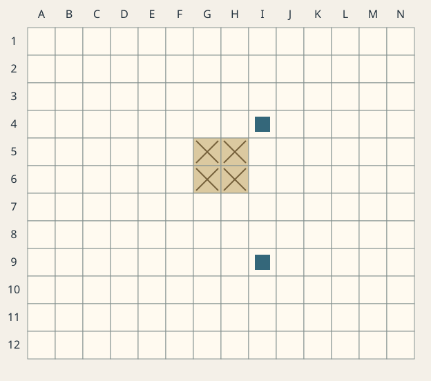

Одинаковые правила, разная история
Все карты совпадают с сеткой нативного пакета: 14 × 12, клетка — 5 футов. G5/H5/G6/H6 — трудная местность; I4/I9 — половинное укрытие. Остальные детали описания декоративны, пока ведущий не изменил поле штатно.
Расстановка и параметры
Герои по порядку: B3, B4, B5, B6, C3, C4, C5. Противники: L3, L4, L5, L6, M3. Используйте только нужное число фигур.
Для 3 / 4 / 5 / 6 / 7 игроков: 2 / 3 / 3 / 4 / 5 противников, здоровье каждого 12 / 14 / 16 / 18 / 20. Защита 12; скорость 20 футов; одна ближняя атака +3, 1d4+1 дробящего урона, досягаемость 5 футов.
Враги — простая поддерживаемая модель. Мирные решения и ограничения сцены описаны отдельно; ведущий подтверждает их результат. После первого раунда напомните пути переговоров или отступления. Встречи не запускаются автоматически.
Упражнение с бумажными великанами
Только если игроки явно согласятся на предложенное Саей отдельное боевое упражнение. Переход по плато, помощь и улику можно получить без него; слова о храбрости сами встречу не запускают.
Цель и выходы
Оттеснить бумажных великанов от общей скамьи либо завершить упражнение по соглашению. Можно отступить к любому краю поля, сдаться или попросить остановку: Сая складывает фигуры, а сюжет продолжается без утраты улик.
До начала предложить Сае совместную переноску скамьи вместо боя. Во время упражнения сказать «остановка» либо попросить фигуры сложиться; это прекращает встречу без проверки и сохраняет право выбрать дальнейший путь.
Поведение противников
Сложенная фигура с широкими тупыми ладонями и нарисованным торжественным подбородком. Это объявленный учебный предмет, а не пленённый человек.
Держатся возле центральной области, подходят к ближайшему согласившемуся участнику и делают обычную атаку. Не преследуют отступающих, не сталкивают с плато и не получают особых реакций, захватов или состояний.
Размер группы
3 игрока: 2 фигуры по 12 HP; 4: 3 по 14 HP; 5: 3 по 16 HP; 6: 4 по 18 HP; 7: 5 по 20 HP. У всех AC 12, одна ближняя атака +3, урон 1d4+1. При 3 игроках предлагайте один общий план; при 4–5 две параллельные задачи; при 6–7 каждый объявляет намерение до разрешения раунда. Особых атак не добавлять.

↔ На узком экране прокрутите карту вбок. Полный размер доступен по ссылке ниже.

Поле 14×12: только G5, H5, G6, H6 — трудная местность из мягких бумажных складок; только I4 и I9 — половинное укрытие за пустыми коробами. Начальные места героев: B3, B4, B5, B6, C3, C4, C5; врагов: L3, L4, L5, L6, M3, по числу участников. Нарисованный уступ, скамья и облака — декорации без дополнительных автоматических свойств; опасного обрыва на поле нет.
Слишком большие сравнения
Бель заранее предлагает желающим отдельную игру с оживлёнными бумажными сравнениями. Начать только после ясного согласия на бой; отказавшиеся могут одновременно описывать собственную спокойную сцену.
Цель и выходы
Освободить место для тихого стула от добровольно созданных громких фигур или отозвать сравнения словами. Победа не нужна для пикника. Можно уйти за край поля, сдаться либо остановить игру и вернуться к разговору.
Назвать более точное собственное обещание или прямо отозвать сравнение. Бель немедленно складывает соответствующие реквизиты; общий «стоп» завершает всю встречу без броска и без обязательной шутки.
Поведение противников
Бумажная фигура с надписью «огромный, как всё» и смешными короткими ногами. Её нелепость относится к фразе, а не к телу или голосу игрока.
По очереди подходят к ближайшим участвующим героям и толкают бумажной ладонью обычной атакой. Не причиняют дополнительных состояний, не читают мысли и не вовлекают отказавшихся игроков.
Размер группы
3 игрока: 2 фигуры по 12 HP; 4: 3 по 14 HP; 5: 3 по 16 HP; 6: 4 по 18 HP; 7: 5 по 20 HP. AC 12, одна ближняя атака +3 на 1d4+1. При 3 игроках стул общий; при 4–5 дайте каждому разные способы подойти; при 6–7 чередуйте инициативу разговора и боя, сохраняя стандартные правила. Улики не зависят от результата.
↔ На узком экране прокрутите карту вбок. Полный размер доступен по ссылке ниже.

Поле 14×12: G5, H5, G6, H6 — единственные трудные клетки с бумажными лентами; I4 и I9 — единственные клетки половинного укрытия за коробами для чашек. Герои начинают на B3, B4, B5, B6, C3, C4, C5; враги на L3, L4, L5, L6, M3, лишние позиции не используются. Зонтики, тихий стул и вывески служат декорациями и не вводят иных автоматических свойств.
Пример слишком окончательной фразы
Касс предлагает добровольную наглядную пробу громкого обещания «Я всегда справлюсь одна». Встреча начинается только при отдельном согласии игроков на бумажный поединок; договор и выбор продолжения от этого не зависят.
Цель и выходы
Добраться до свободного места для своей формулировки либо остановить пробу и произнести более точное обещание. Отступление за край, сдача или отказ доступны сразу. Фигуры не охраняют выход и не удерживают ничьё имя.
Сказать, что это обещание не принимается, уточнить его срок или попросить завершить показ. Касс убирает реквизит без проверки и продолжает переговоры на тех же условиях; отказ не уменьшает право на собственный текст.
Поведение противников
Плотно сложенная бумажная скобка с двумя короткими ножками; на боку написано слово «всегда». Это реквизит предложения Касса, а не власть над будущим.
Выстраиваются возле центра и атакуют ближайшего участвующего героя одним обычным ударом. Не мешают разговаривать, не запирают проходы и не превращают повреждения в изменения личности.
Размер группы
3 игрока: 2 скобки по 12 HP; 4: 3 по 14 HP; 5: 3 по 16 HP; 6: 4 по 18 HP; 7: 5 по 20 HP. AC 12, одна ближняя атака +3 с уроном 1d4+1. При 3 игроках одно общее намерение; при 4–5 распределите поддержку и движение; при 6–7 перед разрешением соберите действие каждого. Дополнительных атак, таймеров и особых условий нет.
↔ На узком экране прокрутите карту вбок. Полный размер доступен по ссылке ниже.

Поле 14×12. Только G5, H5, G6, H6 являются трудной местностью из крупных бумажных складок; только I4 и I9 дают половинное укрытие за пустыми футлярами. Герои: B3, B4, B5, B6, C3, C4, C5; враги: L3, L4, L5, L6, M3, по числу фигур. Нарисованные названия и свободное место для текста — декорации без дополнительных автоматических свойств.